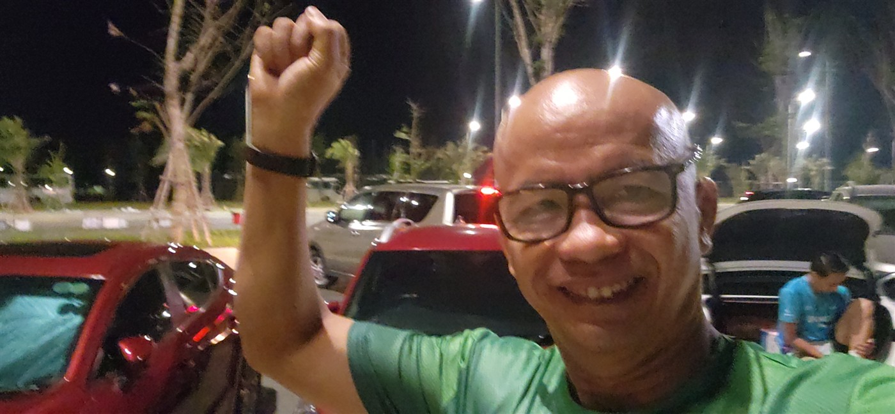
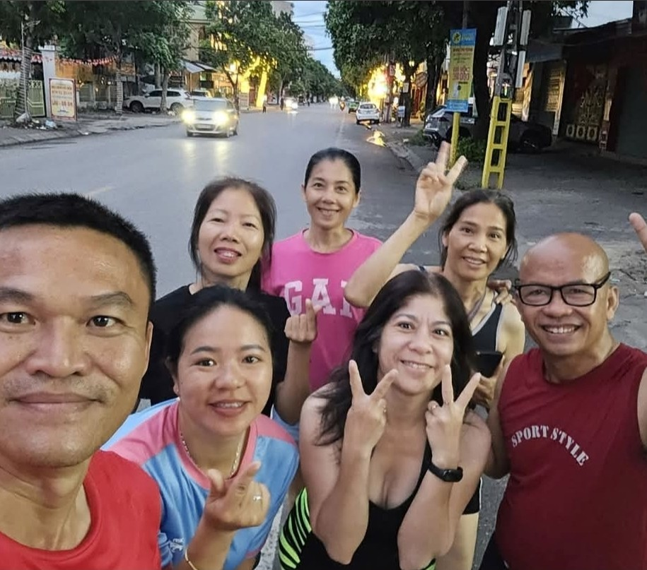
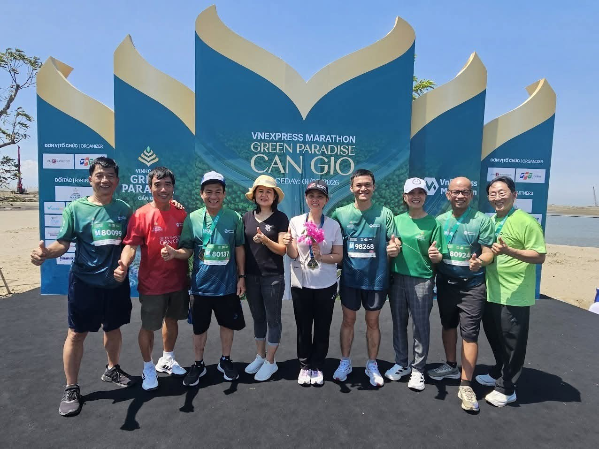
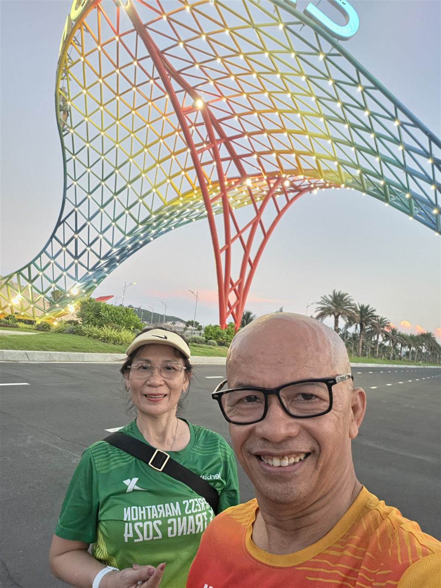

MÙNG MỘT TẾT, TÔI ĐÃ LÀM MỘT VIỆC CHƯA TỪNG LÀM TRONG ĐỜI
Mùng Một Tết năm nay, khi nhiều gia đình đang chuẩn bị quần áo đẹp, trà bánh và những lời chúc đầu năm, tôi lại đưa ra một quyết định rất khác:
Đó là lần đầu tiên trong đời tôi bắt đầu năm mới theo cách này.
Ngoài đường lúc ấy vẫn còn khá yên tĩnh. Không khí buổi sáng đầu năm thật đặc biệt. Trong khi mọi người chuẩn bị đi chúc Tết hoặc đón những vị khách đầu tiên đến nhà, tôi mặc áo thun, mang giày chạy và một mình tiến về phía trước.
Trên đường, nhiều người nhìn tôi bằng ánh mắt có phần ngạc nhiên, thậm chí nghi hoặc. Có lẽ họ đang tự hỏi: “Ngày Mùng Một Tết mà cũng đi chạy sao?”


Thú thật, trong tôi lúc ấy cũng có một cảm giác rất lạ. Bởi đây là điều tôi chưa từng làm. Trên cung đường hôm ấy, tôi có cảm giác dường như chỉ có một mình mình đang chạy.
Nhưng tôi vẫn tiếp tục.
Từng bước chân đưa tôi đi qua sự ngại ngùng, vượt qua ánh mắt của người khác và chiến thắng tiếng nói bên trong mình: “Hôm nay là Tết, nghỉ một ngày cũng có sao đâu!”
Cuối cùng, tôi hoàn thành hơn 10km.
Điều đáng nhớ nhất không phải là con số 10km. Điều khiến tôi vui nhất là tôi đã chiến thắng được cảm giác e ngại khi làm một việc mình chưa từng làm.
Tôi nhận ra rằng có những thay đổi lớn trong cuộc đời không bắt đầu bằng một kế hoạch thật hoành tráng. Nó có thể bắt đầu từ một quyết định rất nhỏ:
Từ buổi sáng Mùng Một Tết ấy, tôi tiếp tục duy trì việc chạy bộ. Có ngày cơ thể khỏe khoắn, tinh thần hào hứng. Nhưng cũng có ngày trời mưa, người mệt hoặc xuất hiện một lý do khiến tôi chỉ muốn ở nhà.
Những ngày như vậy, tôi không ép mình phải chạy thật xa:
Khoảng cách không phải lúc nào cũng quan trọng. Quan trọng là tôi vẫn xỏ giày, vẫn lên đường và hoàn thành điều mình đã cam kết với bản thân. Từng bước chân nhỏ bé ấy đã góp lại thành một kết quả mà trước đây tôi từng nghĩ là rất khó khăn.
Tháng Bảy vừa rồi, tôi đã hoàn thành cự ly marathon 42km tại Cam Ranh cùng những người bạn.


Khi về đích, tôi nhớ đến buổi sáng Mùng Một Tết trên đường Lê Văn Khương. Nếu ngày hôm đó tôi chọn ngủ thêm, chọn trì hoãn hoặc ngại ánh mắt của người khác, có lẽ hành trình của tôi đã rất khác.
Ở tuổi 58, sau 18 năm chạy bộ và đạp xe, tôi càng thấm thía một điều:
Nếu bạn đang ở tuổi 40, 50 hay 60 và muốn thay đổi sức khỏe, đừng vội đặt ra một mục tiêu quá lớn. Hãy bắt đầu bằng việc đi bộ hoặc chạy 1km. Ngày mai, hãy tiếp tục thêm một lần nữa.
Đừng chờ đến khi có đủ thời gian, đủ động lực hay đủ điều kiện. Đôi khi, chỉ cần xỏ giày và bước ra khỏi cửa, bạn đã chiến thắng chính mình rồi.
Nếu chọn một việc nhỏ để bắt đầu thay đổi sức khỏe ngay từ ngày mai, bạn sẽ chọn làm gì? Hãy chia sẻ cùng tôi ở phần bình luận bên dưới nhé!
Chia Sẻ Cam Kết Nhỏ Của Bạn Ngay Hôm Nay
“Nếu chọn một việc nhỏ để bắt đầu thay đổi sức khỏe ngay từ ngày mai, bạn sẽ chọn làm gì? Hãy chia sẻ cùng tôi ở phần bình luận nhé!”